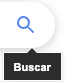
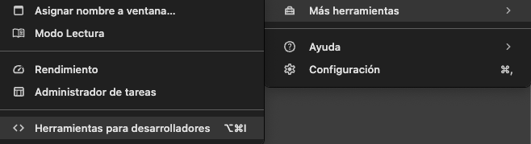
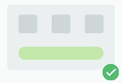
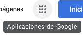
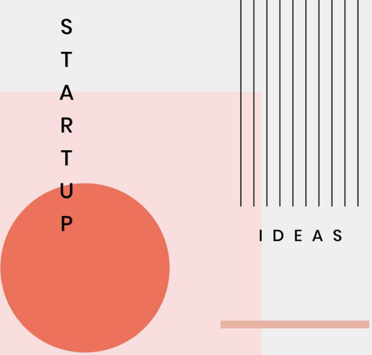
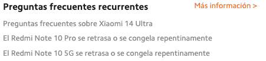
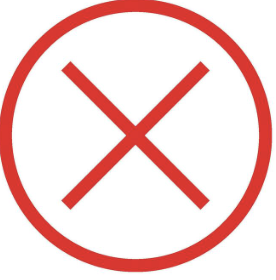
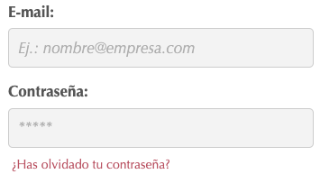
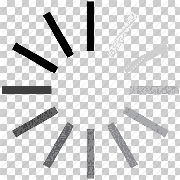
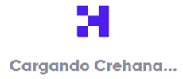

Reconocer antes que recordar
Los
usuarios no deben tener que recordar información de una pantalla a
otra. Las instrucciones y opciones deben ser visibles en el
contexto actual.
Pruebas
de usabilidad, análisis de comentarios de usuarios.
Herramientas de análisis de usabilidad, encuestas.
Minimizar la cantidad de información que los usuarios necesitan
recordar, proporcionar etiquetas y descripciones claras, utilizar
agrupaciones y jerarquías para organizar la información.

Flexibilidad y eficiencia de uso
El
sistema debe ser flexible y eficiente para usuarios con diferentes
niveles de experiencia.
Pruebas de usabilidad con usuarios de diferentes niveles de
experiencia.
Herramientas de análisis de usabilidad, software de registro de
usuarios.
Ofrecer atajos de teclado y funciones avanzadas para usuarios
expertos, proporcionar ayuda contextual y tutoriales para
principiantes, permitir que los usuarios personalicen la
interfaz.

Diseño estético y minimalista
El
sistema debe ser estéticamente agradable y no sobrecargar a los
usuarios con información innecesaria.
Pruebas
de usabilidad, análisis de comentarios de usuarios.
Herramientas de análisis de usabilidad, encuestas.
Usar
un diseño limpio y simple, evitar el uso excesivo de colores y
gráficos, priorizar el contenido sobre la decoración.



Ayuda y documentación
El
sistema debe proporcionar ayuda y documentación clara y
concisa.
Pruebas
de usabilidad, análisis de comentarios de usuarios.
Herramientas de análisis de usabilidad, encuestas.
Proporcionar un sistema de ayuda contextual, ofrecer documentación
completa y fácil de entender, crear tutoriales y guías paso a
paso.


Prevención de errores
El
sistema debe ser probado con usuarios reales para garantizar que
cumpla con sus necesidades.
Pruebas
de usabilidad, análisis de registros de errores.
Software
de registro de errores, herramientas de análisis de usabilidad.
Implementar validación de datos robusta, proporcionar mensajes de
error claros y específicos, ofrecer opciones para deshacer y
rehacer, permitir que los usuarios reporten errores.


Visibilidad del estado del sistema
El
sistema debe mantener informados a los usuarios sobre lo que está
sucediendo, a través de comentarios apropiados dentro de un tiempo
razonable.
Esto se
puede medir con pruebas de usabilidad, análisis de comentarios de
usuarios.
A través
de eyetracking o software de registro de usuarios.
Si
proporcionamos una retroalimentación clara y oportuna sobre el
estado del sistema, como mensajes de confirmación, barras de
progreso y animaciones de carga. Nos evitamos que el usuario se
sienta frustrado y abandonen la página.


Relación entre el sistema y el mundo real
El
sistema tiene que “hablar” el lenguaje del usuario con palabras o
frases que a éste le sean familiares y que pueda reconocer con
facilidad.
Pruebas
de usabilidad, análisis de comentarios de usuarios.
Encuestas, entrevistas a usuarios.
Usar
un lenguaje sencillo y directo, evitar jerga técnica y siglas.
Control y libertad del usuario
Tenemos que darle al usuario la posibilidad de subsanar el error y
no sentirse frustrado por no poder realizar algo.
Pruebas
de usabilidad, análisis de comentarios de usuarios.
Encuestas, entrevistas a usuarios.
Usar
un lenguaje sencillo y directo, evitar jerga técnica y siglas.


Consciencia y estándares
Hay
que tener en cuenta es seguir los convenios establecidos para
ciertos iconos.
Auditorías de usabilidad, análisis de comentarios de usuarios.
Herramientas de análisis de usabilidad, guías de estilo.
Usar
una terminología consistente, mantener una apariencia y un diseño
uniformes, seguir las convenciones de diseño estándar.

Prevenir y detectar errores y ofrecer soluciones
Tenemos que intentar que todos los errores que puedan ocurrir en
tu web estén expresados en un lenguaje entendible por todos, no
por códigos.
Pruebas
de usabilidad, análisis de registros de errores.
Software
de registro de errores, herramientas de análisis de usabilidad.
Implementar validación de datos robusta, proporcionar mensajes de
error claros y específicos, ofrecer opciones para deshacer y
rehacer, permitir que los usuarios reporten errores.